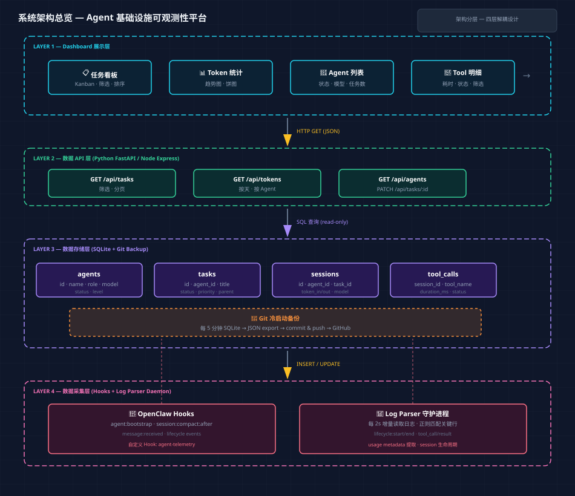
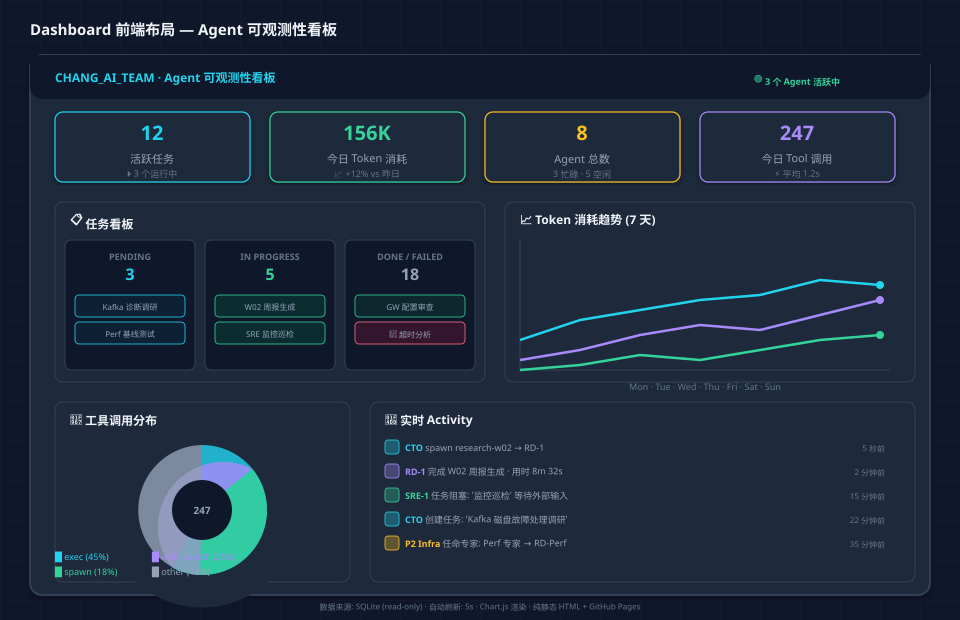
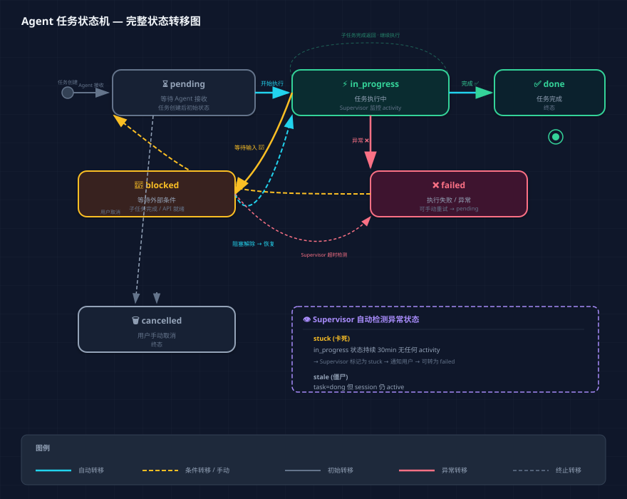

| 痛点 | 具体表现 | 影响 |
|---|---|---|
| 🔮 任务黑盒 | CTO 下发任务后不知道子 Agent 是否启动、进度如何、是否阻塞 | 需要手动确认，无法自动化编排 |
| 📊 无消耗统计 | 不知道每个 Agent、每个任务、每天消耗了多少 Token | 成本失控风险 |
| 🔀 协作混乱 | Agent 之间调用没有规范，fork/isolated 选择随意 | 上下文污染或信息丢失 |
| 📋 无状态追踪 | 任务完成/失败后没有持久化记录 | 无法回溯、无法审计 |
| 🔄 冷启动脆弱 | 所有状态在内存中，Gateway 重启全丢 | 不可靠 |
实时展示所有 Agent 任务状态（pending → in_progress → done/failed），支持按 agent、时间、状态筛选
按 session、agent、日期维度的 Token 消耗统计，支持趋势图
SQLite + Git 备份，重启后 < 30s 恢复全部状态
定义 Agent 角色权限矩阵、通信协议、状态变更规范，写入 prompt
任务超时、Token 超限、Agent 异常状态 → 飞书通知
任意历史时间点的 Dashboard 快照，支持按周/月聚合

图 3-1：系统架构总览 — 四层解耦设计（点击查看大图）
| 对比维度 | SQLite + Git | 飞书 Bitable | 纯 Git JSON |
|---|---|---|---|
| 查询能力 | ✅ SQL 聚合/过滤/排序 | ⚠️ API 查询受限 | ❌ 无查询能力 |
| 冷启动 | ✅ Git clone 恢复 | ⚠️ 依赖飞书 API | ✅ Git clone |
| 写性能 | ✅ 本地毫秒级 | ❌ 限流 100/s | ⚠️ 需 fsync |
| 离线可用 | ✅ 完全本地 | ❌ 需网络 | ✅ 本地 |
| 可视化 | ⚠️ 需自建前端 | ✅ 飞书原生 | ⚠️ 需自建前端 |
CREATE TABLE agents (
id TEXT PRIMARY KEY, -- 'cto-agent'
name TEXT NOT NULL, -- 'CTO'
role TEXT NOT NULL, -- 'cto' | 'vp_arch' | 'expert_infra' | 'rd' | 'sre' | 'qa'
level TEXT NOT NULL, -- 'vp' | 'expert' | 'worker'
model TEXT, -- 'deepseek/deepseek-v4-pro'
status TEXT DEFAULT 'idle', -- 'idle' | 'busy' | 'offline'
created_at TEXT DEFAULT (datetime('now')),
updated_at TEXT DEFAULT (datetime('now'))
);
-- 预置数据
INSERT INTO agents VALUES ('cto-agent', 'CTO', 'cto', 'vp', 'deepseek/deepseek-v4-pro', 'idle', datetime('now'), datetime('now'));CREATE TABLE tasks (
id TEXT PRIMARY KEY, -- UUID
agent_id TEXT NOT NULL REFERENCES agents(id),
parent_task_id TEXT REFERENCES tasks(id), -- 父任务（子 Agent 任务）
title TEXT NOT NULL,
description TEXT,
status TEXT DEFAULT 'pending', -- 'pending'|'in_progress'|'blocked'|'done'|'failed'
priority TEXT DEFAULT 'medium', -- 'low'|'medium'|'high'|'critical'
session_key TEXT, -- 关联的 OpenClaw session
started_at TEXT,
completed_at TEXT,
error_message TEXT,
tags TEXT, -- JSON array: ["research","kafka"]
created_at TEXT DEFAULT (datetime('now')),
updated_at TEXT DEFAULT (datetime('now'))
);
CREATE INDEX idx_tasks_agent ON tasks(agent_id);
CREATE INDEX idx_tasks_status ON tasks(status);
CREATE INDEX idx_tasks_parent ON tasks(parent_task_id);CREATE TABLE sessions (
id TEXT PRIMARY KEY, -- OpenClaw sessionKey
agent_id TEXT REFERENCES agents(id),
task_id TEXT REFERENCES tasks(id),
status TEXT DEFAULT 'active', -- 'active'|'completed'|'error'|'compacted'
token_in INTEGER DEFAULT 0,
token_out INTEGER DEFAULT 0,
model TEXT,
started_at TEXT,
ended_at TEXT,
created_at TEXT DEFAULT (datetime('now'))
);
CREATE INDEX idx_sessions_agent ON sessions(agent_id);
CREATE INDEX idx_sessions_task ON sessions(task_id);
CREATE INDEX idx_sessions_started ON sessions(started_at);CREATE TABLE tool_calls (
id INTEGER PRIMARY KEY AUTOINCREMENT,
session_id TEXT NOT NULL REFERENCES sessions(id),
tool_name TEXT NOT NULL, -- 'web_search', 'exec', 'sessions_spawn'...
params_json TEXT, -- JSON string of parameters
result_summary TEXT, -- 前 200 字符的结果摘要
status TEXT DEFAULT 'success', -- 'success'|'error'|'timeout'
duration_ms INTEGER,
token_cost INTEGER, -- 此 tool call 消耗的估算 token
created_at TEXT DEFAULT (datetime('now'))
);
CREATE INDEX idx_toolcalls_session ON tool_calls(session_id);
CREATE INDEX idx_toolcalls_name ON tool_calls(tool_name);
CREATE INDEX idx_toolcalls_created ON tool_calls(created_at);| 数据 | 采集方式 | 触发时机 | 优先级 |
|---|---|---|---|
| Agent 注册 | Hook: agent:bootstrap | Agent 启动前 | P0 |
| 任务创建 | Hook: message:received | 用户下发任务 | P0 |
| 任务状态变更 | Agent 调 sessions_send 给 Supervisor | 关键节点 | P0 |
| Session 生命周期 | Log Parser 匹配 lifecycle 事件 | start / end / error | P0 |
| Tool Call 记录 | Log Parser 匹配 tool_call 事件 | 每次 tool 调用 | P1 |
| Token 消耗 | Log Parser 提取 usage metadata | Session 结束 | P0 |
| 对话摘要 | Hook: session:compact:after | Compaction 后 | P2 |
利用 OpenClaw Hook 系统监听关键事件，开发一个自定义 Hook agent-telemetry：
agent:bootstrap — 在 Agent 启动时记录 agent_id、模型、workspace 信息到 SQLite，更新 agent 状态为 busy。
// ~/.openclaw/hooks/agent-telemetry/handler.ts
// 监听 agent:bootstrap 事件，写入 agent 上线记录
const handler = async (event) => {
if (event.type !== "agent:bootstrap") return;
const { agentId, bootstrapFiles } = event.context;
// SQLite INSERT: agent 上线记录
// UPDATE agents SET status = 'busy', updated_at = now WHERE id = agentId
};
export default handler;Log Parser 是一个驻留守护进程，每 2 秒轮询 OpenClaw 日志文件的增量部分（通过 inotify + tail 机制），解析 JSON 行日志并写入 SQLite。
# Log Parser 核心逻辑伪代码
class LogParser:
def __init__(self):
self.log_file = "/tmp/openclaw/openclaw-{date}.log"
self.last_position = self.load_checkpoint()
self.db = SQLiteDB("agent_telemetry.db")
def poll(self):
"""每 2 秒执行一次"""
new_lines = self.read_incremental(self.log_file, self.last_position)
for line in new_lines:
event = json.loads(line)
self.dispatch(event)
self.save_checkpoint()
def dispatch(self, event):
if event["stream"] == "tool":
# tool_call 事件 → INSERT tool_calls
self.db.insert_tool_call(event)
elif event["stream"] == "lifecycle":
if event["phase"] == "start":
self.db.start_session(event)
elif event["phase"] == "end":
self.db.end_session(event, event["usage"])
elif event["phase"] == "error":
self.db.fail_session(event)Log Parser 可以捕获"发生了什么事"（tool call、lifecycle），但无法知道"这件事的语义"（比如 agent 被阻塞在等用户输入，还是正常执行中）。因此需要 Agent 在关键节点主动上报状态。
| 时机 | 上报方式 | 上报内容 |
|---|---|---|
| 任务开始 | Agent 在 prompt 中要求开始时 update task 状态 | status: in_progress, started_at: now |
| 遇到阻塞 | Agent 识别到需要外部输入，无法继续 | status: blocked, block_reason: "waiting for user input" |
| 子任务分发 | Agent spawn 子 agent 后记录 | parent_task_id: current, child_tasks: [...] |
| 任务完成 | Agent 在最后一步确认完成 | status: done, completed_at: now, summary: "xxx" |
| 任务失败 | Agent 捕获异常 | status: failed, error_message: "xxx" |
Agent 通过调用一个轻量的 taskboard CLI 工具来变更状态，而非自己拼接 SQL：
# Agent 在自己的 prompt 中可以调用的命令
$ taskboard task update <task_id> --status in_progress
$ taskboard task update <task_id> --status blocked --reason "等待用户确认"
$ taskboard task update <task_id> --status done --summary "已完成 Kafka 调研"
# 内部实现：读取 SQLite、更新状态、写入Log Parser 写入的是"客观事实"（session 起止、tool call），Agent 上报的是"主观意图"（任务进度）。Supervisor Agent 定期运行对账脚本：
done 但 session 未结束 → 标记为 stale，可能 agent 提前退出了in_progress → 自动标记 done 或 failedin_progress → 标记 stuck无框架依赖，直接部署到 GitHub Pages。数据通过 fetch() 从 API 拉取 JSON 渲染。
轻量级（~60KB gzip），支持折线图、柱状图、饼图。Token 趋势和工具分布用这个最合适。
纯静态页面无法用 WebSocket。10 秒轮询 + 增量更新，对可用性影响小。
API 层部署在 Gateway 服务器上，通过 ngrok 暴露给 GitHub Pages 的 Dashboard。

图 6-1：Dashboard 前端布局 — Kanban + 趋势图 + Activity 流（点击查看大图）
| 视图 | 数据源 | 刷新频率 | 交互 |
|---|---|---|---|
| 任务看板 | GET /api/tasks?status=active | 10s | 筛选、排序、点击展开详情 |
| Token 汇总 | GET /api/tokens?period=today|week | 30s | 按 Agent 细分 |
| 趋势图 | GET /api/tokens?granularity=hour&days=7 | 60s | hover 查看具体数值 |
| Agent 列表 | GET /api/agents | 10s | 点击进入 Agent 详情（历史任务） |
| Activity 流 | GET /api/activity?limit=20 | 10s | 实时滚动 |
| 操作 | CTO | VP 层 | 专家层 | 执行层 |
|---|---|---|---|---|
| 创建子 Agent | ✅ any | ✅ 同领域专家 | ❌ 仅建议 | ❌ |
| 任命 VP/专家 | ✅ | ❌ | ❌ | ❌ |
| 技术决策 | ✅ 最终决策 | 🔶 领域内 | 🔶 建议 | ❌ |
| 写入 Dashboard | ✅ | ✅ | ✅ | ✅ |
| 修改规范 | ✅ | ❌ | ❌ | ❌ |
| 直接操作 Git | ✅ | ✅ | 🔶 受限 | ❌ |
Agent 之间通过 sessions_spawn 和 sessions_send 通信。规范如下：
| 场景 | 方式 | context 模式 | 说明 |
|---|---|---|---|
| CTO → 专家 | sessions_spawn | isolated | 不需要 CTO 的对话上下文 |
| CTO → 执行层 | sessions_spawn | isolated | 独立执行，CTO 仅收结果 |
| 专家 → 执行层 | sessions_spawn | isolated | 独立执行 |
| 同级协作 | sessions_send | — | 不创建新 session，直接发消息 |
| 需要上下文传递 | sessions_spawn | fork | ⚠️ 谨慎使用，仅当子 Agent 必须了解当前对话历史 |
// 任务描述 JSON Schema（Agent 间通信的标准格式）
{
"task_id": "uuid",
"type": "research | development | review | deploy",
"title": "简短标题",
"description": "详细描述",
"priority": "low | medium | high | critical",
"deadline": "ISO8601 或 null",
"dependencies": ["task_id_1", "task_id_2"],
"output": {
"format": "html | json | markdown | file",
"path": "输出文件路径",
"schema": "可选 JSON Schema"
}
}
图 8-1：Agent 任务状态机 — 完整状态转移图（点击查看大图）
| 当前状态 | 允许的目标状态 | 触发者 |
|---|---|---|
| pending | in_progress, cancelled | Agent / 用户 |
| in_progress | done, failed, blocked | Agent |
| blocked | in_progress, cancelled | Agent / 用户 |
| done | （终态） | — |
| failed | pending（重试） | 用户 |
| stuck / stale | done, failed | Supervisor |
| Endpoint | 方法 | 参数 | 返回 |
|---|---|---|---|
/api/agents | GET | — | 所有 Agent 及其状态 |
/api/agents/:id | GET | period (7d|30d) | Agent 信息 + 历史任务 + token 趋势 |
/api/tasks | GET | status, agent, priority, limit | 任务列表（支持筛选） |
/api/tasks/:id | GET | — | 任务详情 + 子任务 + session 信息 |
/api/tasks/:id | PATCH | status, error_message | 更新任务状态（Agent 上报用） |
/api/tokens | GET | period, granularity, agent_id | Token 消耗汇总 |
/api/sessions | GET | agent_id, status, limit | Session 列表 |
/api/tool-calls | GET | session_id, tool_name, limit | 工具调用记录 |
/api/stats | GET | — | Dashboard 顶部汇总卡片 |
/api/health | GET | — | 采集器健康检查 |
// GET /api/tasks?status=active
{
"tasks": [
{
"id": "a1b2c3d4",
"title": "Kafka 诊断工具调研",
"agent_id": "rd-kafka-01",
"agent_name": "Kafka RD",
"status": "in_progress",
"priority": "high",
"parent_task_id": null,
"started_at": "2026-05-28T09:00:00Z",
"token_used": 45000,
"child_count": 2
}
],
"summary": {
"total": 27,
"active": 9,
"blocked": 3,
"done_today": 12
}
}架构设计、数据模型、API 定义、Agent 规范草案。本文档。
实现 Log Parser 守护进程 + SQLite schema + taskboard CLI。Agent 可以通过 CLI 更新任务状态，Dashboard 能显示。
纯静态 HTML Dashboard，部署到 GitHub Pages。包含任务看板、Token 统计、Agent 列表三个核心视图。
将协作规范写入各 Agent 的 AGENTS.md prompt，让 Agent 自主在关键节点调用 taskboard 更新状态。不断打磨 prompt 直到行为稳定。
告警通知（飞书）、Supervisor 对账、Git 冷启动备份、Dashboard 增强（更多图表、历史回溯）。
taskboard CLI 工具 + SQLite 数据库初始化脚本 + Log Parser 最小原型。让"Agent 能更新状态，Dashboard 能看到"的最短链路先跑通。
| 风险 | 概率 | 影响 | 缓解措施 |
|---|---|---|---|
| Log Parser 遗漏事件 | 中 | 高 | Supervisor 对账兜底；关键事件同时用 Hook 采集 |
| Agent prompt 不稳定 | 中 | 中 | taskboard CLI 设计为幂等操作；Supervisor 自动纠正 |
| ngrok 隧道不稳定 | 中 | 中 | Dashboard 静态数据兜底（显示"数据暂不可用"）；考虑用 Cloudflare Tunnel |
| SQLite 并发写入冲突 | 低 | 高 | WAL 模式 + 单写入者设计（Collector 是唯一写入者） |
| Token 数据采集不全 | 中 | 低 | 仅影响统计精度，不影响功能；后续可补采集 |